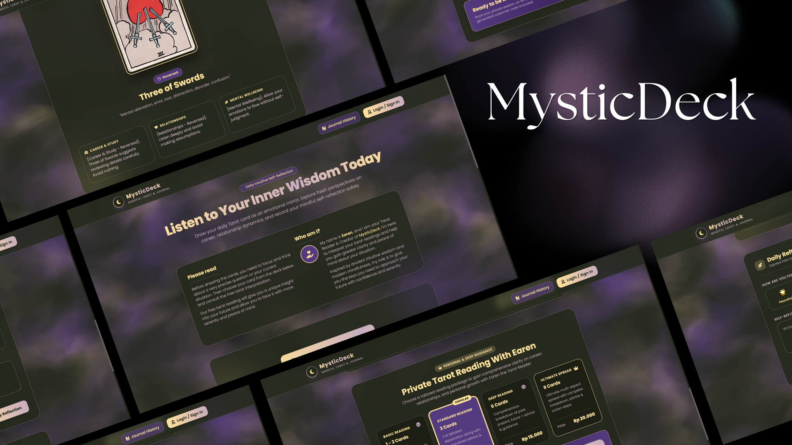
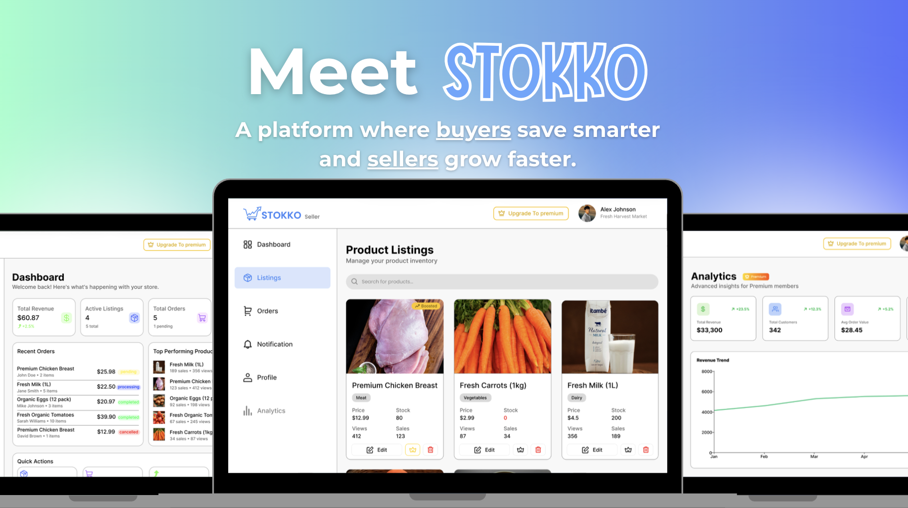
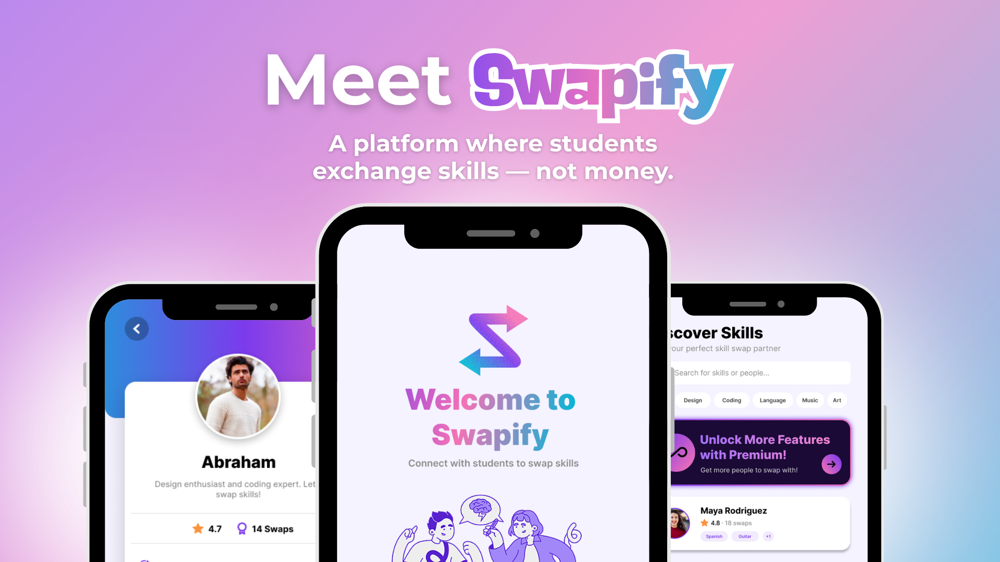
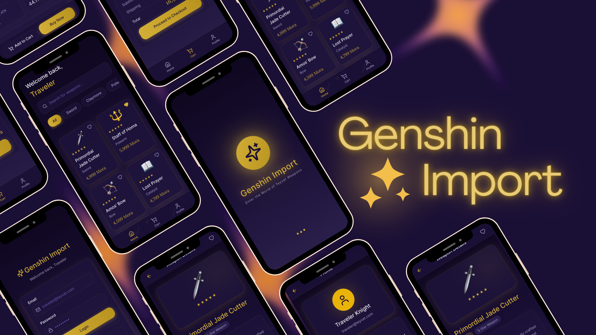
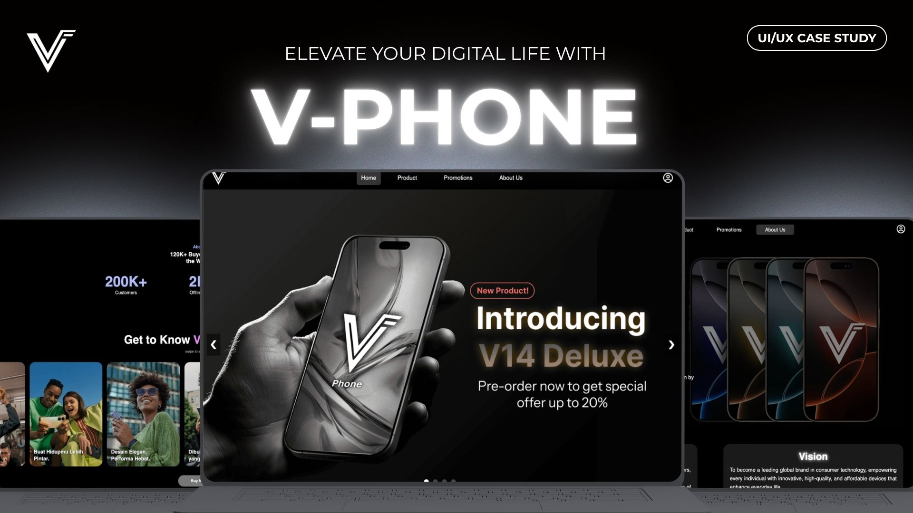
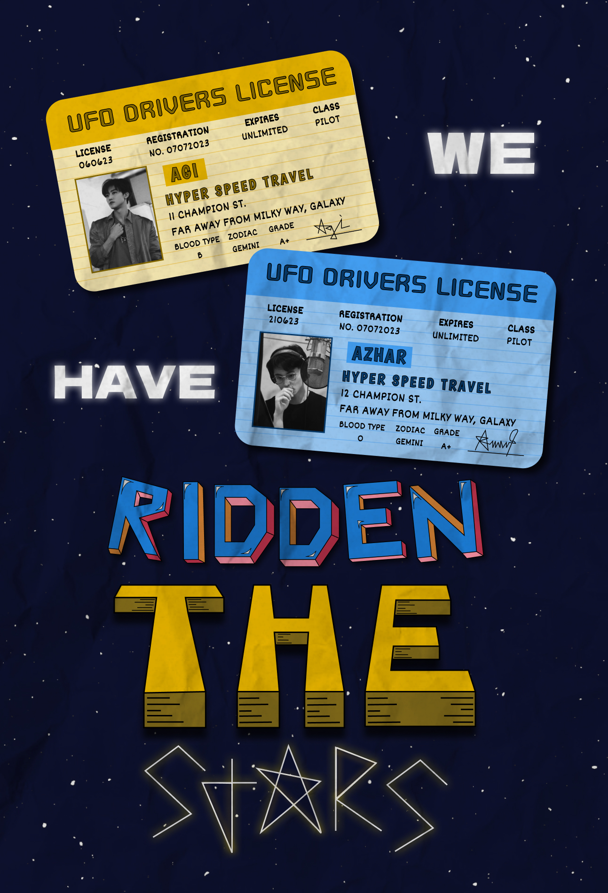
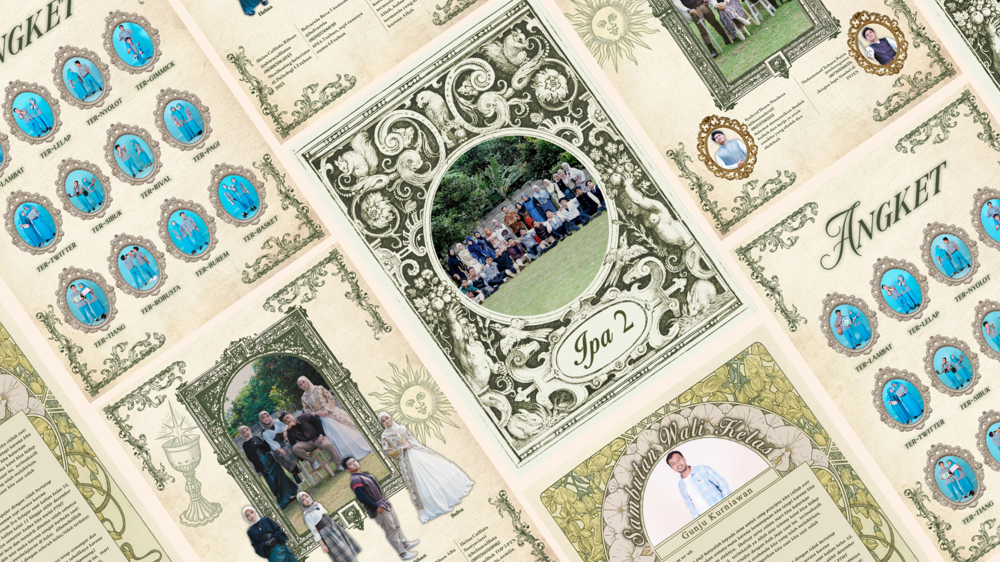

Project Archive
An evolving archive of UI/UX drafts, web projects, graphic designs, and musical explorations.

MysticDeck🔮 MysticDeck
A full-stack web application designed for daily intuitive self-reflection, mindfulness journaling, and personalized Tarot readings with 3D flip mechanics.
Project Overview
MysticDeck is a full-stack Web Application designed for daily intuitive self-reflection, mindfulness journaling, and personalized Tarot readings. Combining ancient symbolic archetype wisdom with modern mental health practices, MysticDeck allows users to draw a daily Tarot card, explore multi-aspect life reflections (Career, Relationships, Wellbeing), log their mood and personal entries securely, and seamlessly book private paid readings via WhatsApp.
Key Features & Highlights
- Interactive 1-Card Daily Draw with 3D Flip Animation: Realistic 3D card flipping mechanics powered by CSS3 Perspective. Supports full 78 Major & Minor Arcana cards (Upright & Reversed orientation logic) with dual asset engine fallback.
- Multi-Pillar Intuitive Guidance: Instant, contextual daily reflections tailored across 3 core life dimensions: Career & Academic Growth, Relationship & Emotional Dynamics, and Mental Health & Self-Care Mindfulness.
- Firebase Authentication & Cloud Storage: Supports 1-Click Google Sign-In and Email/Password authentication. Cloud Firestore NoSQL Database sync for user journal reflections, mood metrics, and draw history (with automatic LocalStorage fallback for guests).
- Mindful Journal & Mood Tracker: Interactive mood selection (Peaceful, Reflective, Anxious, Energetic, Tired, Melancholic) with a dedicated Journal History Drawer to track emotional trends over time.
- Automated WhatsApp Private Reading Upsell Engine: Integrated service package showcase (1-2 Cards, 3 Cards Standard, 6 Cards Deep, 9 Cards Ultimate) with a Unique Customer Code Generator (ARC-XXXX / MYSTIC-XXXX) that auto-populates structured WhatsApp booking messages directly to reader Earen (+62 812-8846-7698).
- Immersive Shader Aesthetics: Interactive 3D atmospheric background rendered using Vanta.js (Fog Shader) and Three.js with a custom dark-mystic color palette (#543A7E Royal Violet, #25291C Deep Forest, #FFE099 Gold, #C8ADC0 Soft Lavender).
Tech Stack & Architecture
- Frontend UI: HTML5, Tailwind CSS, Modern JavaScript (ES6+), FontAwesome Icons, Poppins Typography
- 3D & Shader Graphics: Three.js (r134), Vanta.js (Fog Shader Engine), Standalone SVG Vector Generator
- Backend & Cloud Database: Firebase Authentication (Google OAuth & Email/Password), Cloud Firestore NoSQL Database
- Integrations & Hosting: WhatsApp Deep Linking API, Git, GitHub, Vercel

STOKKOSTOKKO
A data-driven grocery marketplace engineered to help buyers track real-world price trends and empower sellers with business analytics.
Role & Contributions
- Served as the Lead Frontend & UI/UX Developer, spearheading the user-facing experience and interface architecture from conception to delivery.
- Designed intuitive user flows and responsive layouts tailored to two distinct user tiers: buyers seeking price transparency and sellers managing business metrics.
Key Features & User Experience
- Buyer Experience & Price Insights: Designed interactive interfaces for Premium subscribers to visualize historical price trends and receive predictive alerts, turning raw market data into actionable savings insights.
- Seller Analytics Dashboard: Built streamlined data visualization components enabling merchants to track revenue streams, monitor product performance metrics, and optimize local product visibility.
- User-Centric Design: Focused heavily on accessibility and clarity, ensuring complex data sets—such as dynamic price fluctuations and revenue tracking—remained digestible and easy to navigate.
Outcomes & Impact
- Successfully translated a real-world problem into a fully realized, polished web platform centered on utility and transparent market data.
- Elevated personal expertise in product design, frontend architecture, and user experience strategy through end-to-end execution of a production-ready application.

SwapifySwapify
A peer-to-peer learning and skill-swapping platform concept designed to bridge academic struggles and combat student isolation.
Problem Statement & Insight
- Root Inspiration: Identified a critical pain point from early university experiences where peer support was vital for academic recovery.
- Target Audience Pain Points: Recognized that shy students or those without established social circles often struggle in silence, lacking safe avenues to ask questions or seek help outside formal lectures.
- Core Opportunity: Created a solution to democratize peer assistance, helping students combat isolation while simultaneously improving academic performance and building meaningful social connections.
Key Features & Solution
- Skill-Swapping Ecosystem: Developed user flows that enable students to trade expertise across diverse domains—ranging from core coursework to foreign languages and personal hobbies.
- Inclusive Community Building: Designed intuitive navigation and matching systems to make seeking help approachable, reducing the anxiety of reaching out to instructors or unfamiliar classmates.
Outcomes & Impact
- Successfully translated a personal student challenge into a comprehensive UI/UX case study.
- Delivered a high-impact digital product concept focused on user empathy, community engagement, and accessible education.

GenshinImport
Genshin Import
A RPG-themed mobile e-commerce application built with Flutter and Node.js, featuring role-based weapon catalog management.
Architecture & Backend Engineering
- Engineered a robust backend infrastructure using Node.js, Express, and MySQL, managing complex database relations and building secure REST APIs.
- Implemented secure JWT (JSON Web Token) authentication and role-based access control (RBAC):
• Admin: Equipped with full privileges to manage the weapon inventory, including inserting new data, updating existing entries, and deleting records.
• User: Granted full access to browse the catalog and purchase weapons without any quantity limits. - Defined core weapon data attributes requiring an ID, Name, Type, Description, Stock, Image, and Price.
Frontend Development & UI/UX Design
- Developed the cross-platform mobile frontend using Flutter, overcoming the learning curve to successfully bridge the client-side interface with the Node.js backend.
- Designed an immersive RPG-inspired fantasy aesthetic featuring a deep dark background (#0F0820), mystical purple gradients, and signature gold accents (#D4AF37).
- Configured classic Serif typography alongside optimized UI feedback elements including rarity star icons, "SOLD OUT" status badges, and gold Mora currency pricing text.
- Focused heavily on usability by integrating a horizontal category filter bar (Sword, Claymore, Polearm, Bow, Catalyst) and a real-time search bar for high contrast accessibility.
Challenges & Outcomes
- Successfully troubleshot and resolved complex cross-platform integration hurdles, specifically configuring Google OAuth authentication for both Web and Android environments.
- Delivered a fully functional, end-to-end full-stack mobile application that provided invaluable hands-on experience in API connectivity, database administration, and hybrid mobile development.

Portfoliov1
V-Phone: Tech E-Commerce Concept
A complete product e-commerce website built from scratch with custom tech branding, original product photography, and Vanilla JS.
Design Process & Execution
- End-to-End Creative Ownership: Managed all facets of the project lifecycle, from creating original branding elements (logo design, product posters) to capturing and editing product photography.
- UI/UX Prototyping: Designed intuitive user interfaces and layouts within Figma, establishing a polished visual aesthetic tailored for tech consumers.
- Frontend Development: Programmed the complete user-facing experience from scratch using semantic HTML, custom CSS styling, and Vanilla JavaScript, translating the core design vision into an interactive web platform.
Outcomes & Impact
- Successfully delivered a complete, end-to-end web development project that bridged design concept with technical implementation.
- Gained hands-on experience balancing visual design, asset production, and native frontend coding as a solo developer.
i wont let you go
"i wont let you go" is a deeply personal and vulnerable track that captures the quiet agony of loving an avoidant partner. Written from raw, lived experience, the song dives into the exhausting cycle of dealing with sudden silent treatments—knowing logically that they just need a moment of isolation to breathe, yet fighting off the crushing fear and late-night tears of feeling like they are slipping away. Balancing the exhaustion of overthinking with an unwavering devotion, the song serves as a stubborn, heartfelt promise: even if they pull away or try to walk out, the narrator refuses to let them go.
Lyrics
[Verse 1] You texted me and said You need time alone I shouldn’t be calling ur phone But I feel so cold It's freezing until my bone I curled into a ball Even when a time like this You still the one that I ever miss [Pre-Chorus] I should've listened, that you just need time That you were fine, but I get too worried, because [Chorus] Everyday I'm scared of losing you Crying late at night thinking how I live without you If you go.. I won't let you go [Verse 2] Every little spark can burn Into something greater I just wished the reason was not My dream turned reality [Bridge] You keep me waiting while I’m about to go insane We’ve been apart for quite a while And without you brings me pain [Chorus] Everyday I'm scared of losing you Crying late at night thinking how I live without you If you go.. I won't let you go [Outro] I hope you are the one Until the end of time I don't need someone else to run Cause you're enough to be mine
LOVE
The song is a heartfelt exploration of deep, unconditional affection and the vulnerability that comes with falling completely for someone. It captures the progression of quiet admiration into an overwhelming, all-encompassing love—highlighted by sweet, grounded imagery like taking late-night walks on the beach and finding comfort in someone's presence. Rather than holding back, the narrator embraces the emotional risk of falling fast and hard, expressing a raw commitment to love without limits ("couldn't love you only halfway"). It's a gentle, romantic dedication centered on genuine appreciation, quiet devotion, and a willingness to stay by someone's side through everything.
Lyrics
[Verse 1] Day by days i feel my love, growing even more stronger Your beautiful smile, your beautiful eyes, i fall into it, deep inside I cant look away, my heart keep beating faster, when you look at me and smile Suddenly I realize, Is this what they called, falling love at the first sight [Chorus] I dont know did you feel the same But this is the risk that i would take Did you feel how much i fall in to you I just feel that i couldn’t love you only halfway [Verse 2] I take you for night walk on the beach, cause i know you love the sea Your eyes were sparkling, when you talk about your day, i hope i see it everyday You had a charms that not everyone have, you the only perfect one i see And i’ll be here whenever you need me, whenever you felt so lonely [Chorus] I dont know did you feel the same But this is the risk that i would take Did you feel how much i fall in to you I just feel that i couldn’t love you only halfway

Ridden The StarsWe Have Ridden The Stars
A space-themed lyric poster inspired by Conan Gray's "Astronomy", crafted with custom vector typography in Figma.
Design Process & Execution
- Inspiration & Concept Curation: Conducted visual research on Pinterest to establish a celestial, space-oriented aesthetic aligned with the song’s lyrical themes.
- Prototyping & Layout Drafting: Developed initial sketches and wireframed layout structures within Figma to balance typographic hierarchy with visual imagery.
- Custom Typography: Hand-lettered key phrases—specifically "Ridden," "The," and "Stars"—using Figma’s native vector and pen tools to create unique, bespoke display typography.
- Client Collaboration & Customisation: Managed client feedback loops by presenting early drafts, followed by a structured form process to seamlessly integrate specific personalization requests, text adjustments, and photo replacements.
Outcomes & Impact
- Successfully delivered a fully customised, high-resolution graphic asset optimized for print production.
- Streamlined the end-to-end design pipeline within a single collaborative platform, significantly improving proficiency in Figma's vector networks and component management.

Yearbook DesignHighschool Yearbook Design
A medieval-themed high school yearbook design suite combining Renaissance textures, ornate framing, and multi-layered spreads.
Design Process & Execution
- Thematic Curation & Asset Development: Established a rich, historic visual language featuring aged parchment textures, ornate Renaissance-style carved frames, and classical botanical illustrations using Adobe Illustrator for vector framing and ornament arrangement.
- Layout Composition & Photo Manipulation: Built multi-layered editorial layouts in Adobe Photoshop, harmonizing group photography, vintage oval frames, and custom typography to give each spread the authentic feel of a royal manuscript or classical gallery catalog.
- Typographic Hierarchy: Integrated classic calligraphy and serif display fonts for section titles (such as class designations and faculty greetings) paired with clean, legible formatting for student bios, quotes, and social handles.
Outcomes & Impact
- Delivered a cohesive, highly detailed yearbook design set that captured a distinct medieval narrative.
- Blended traditional historical motifs with modern graphic layout techniques, resulting in a memorable and visually striking keepsake for the graduating class.